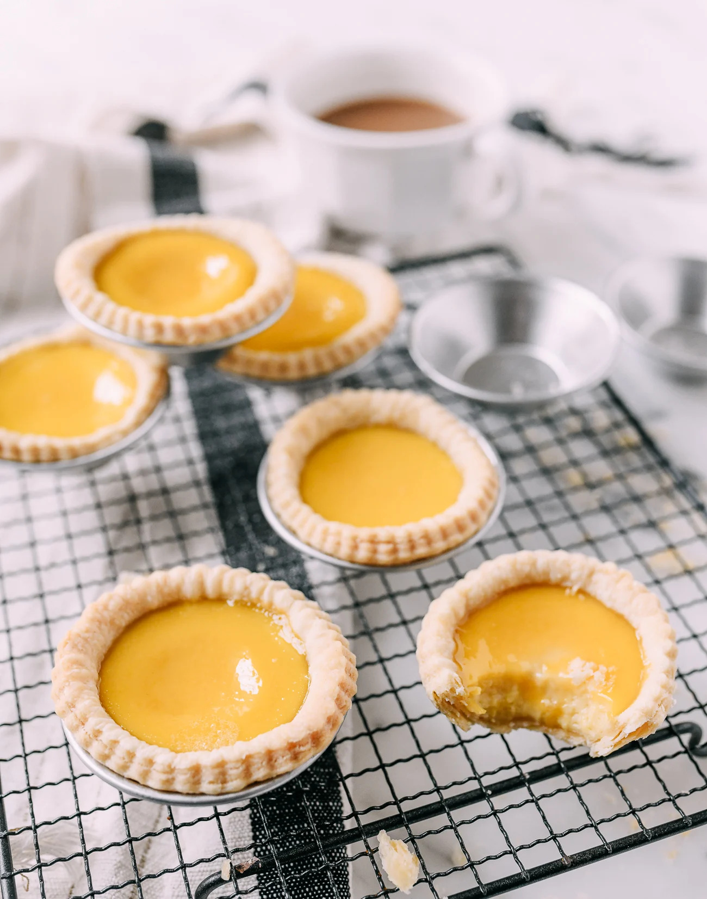
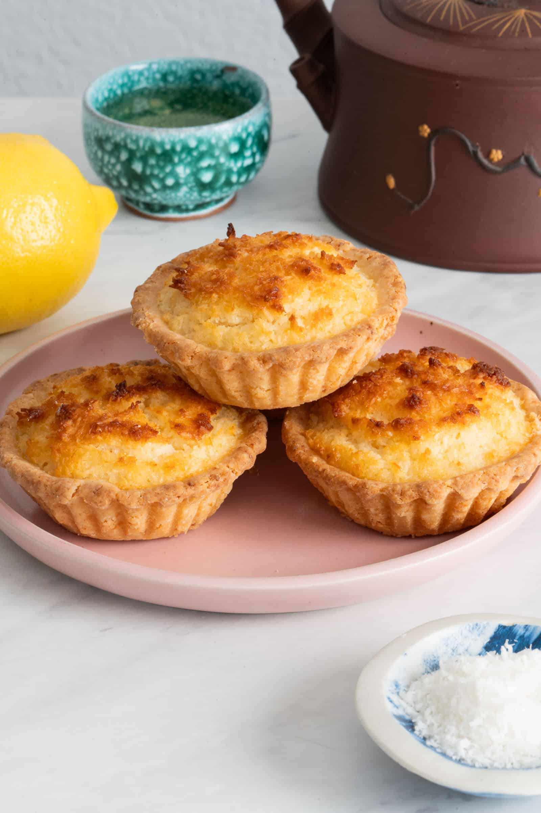
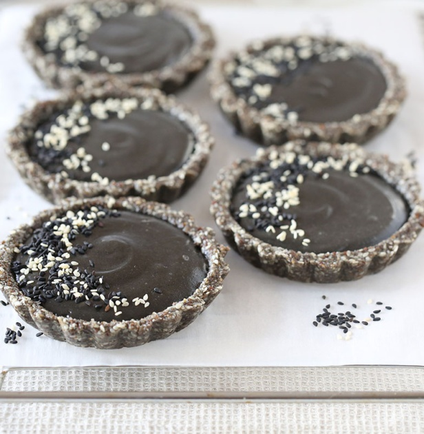
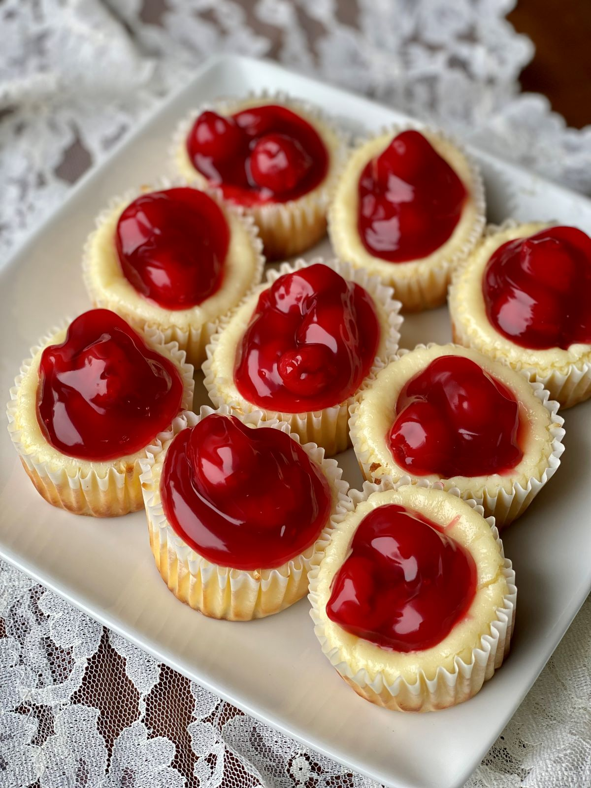
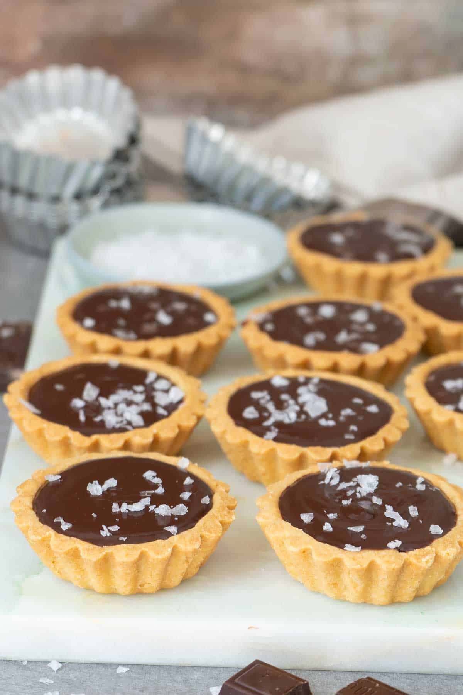
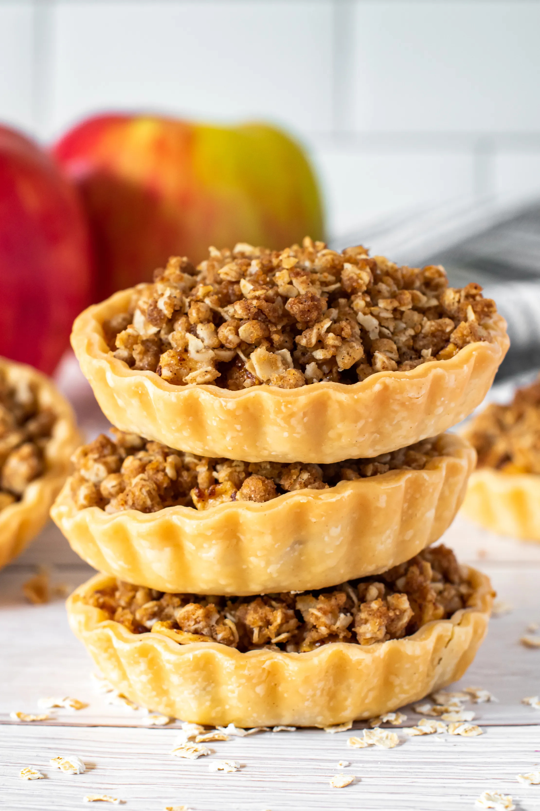
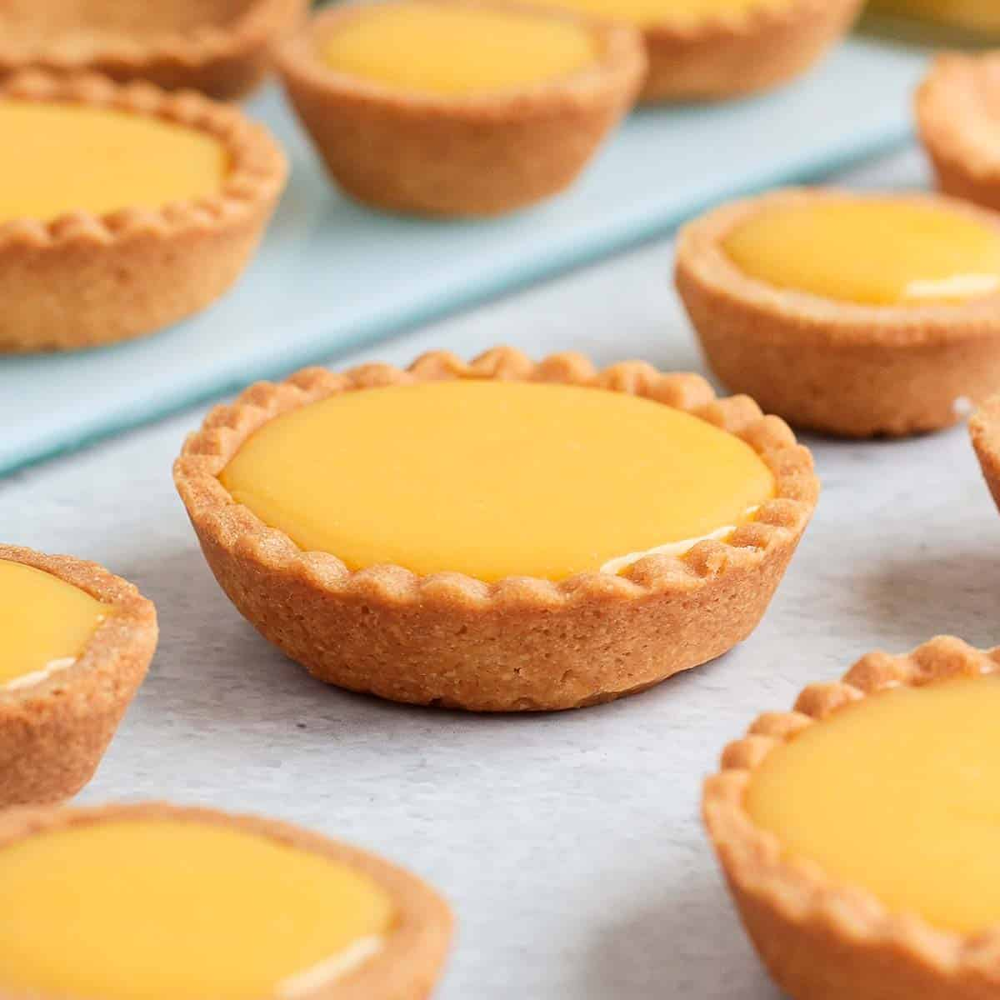
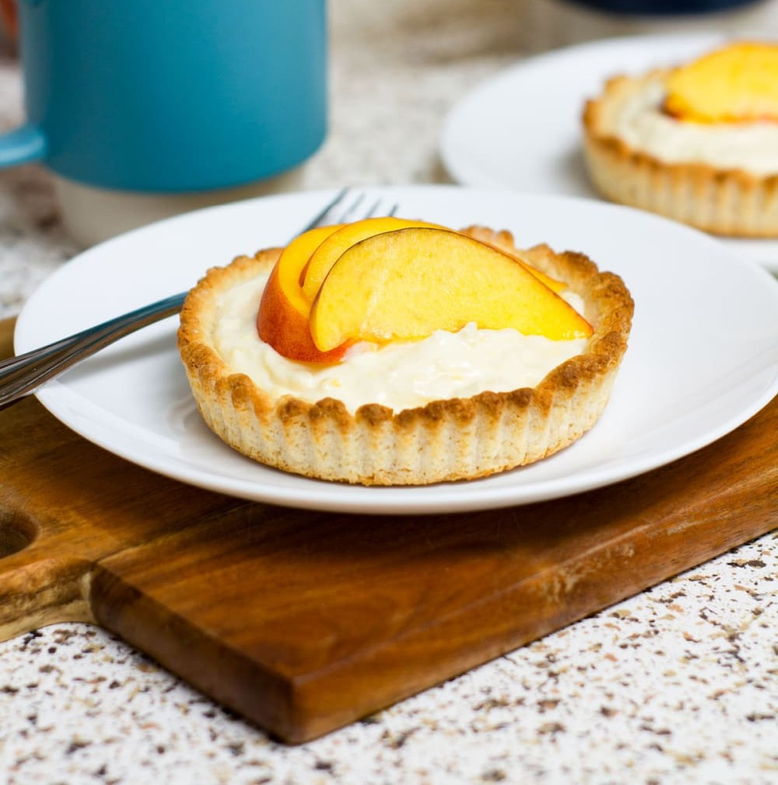
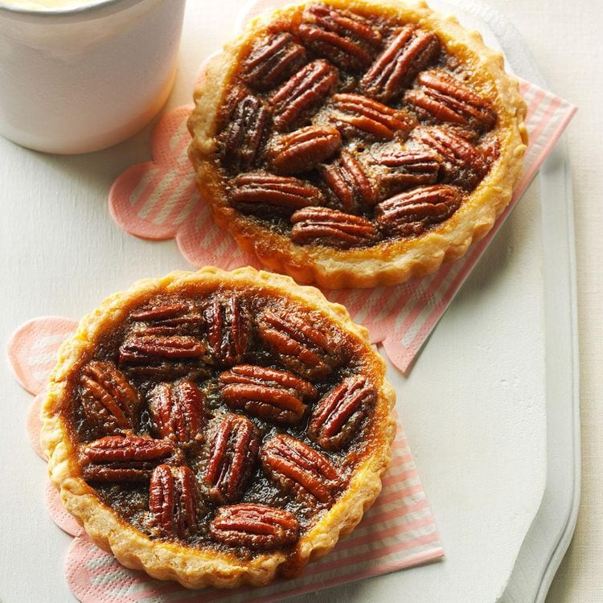
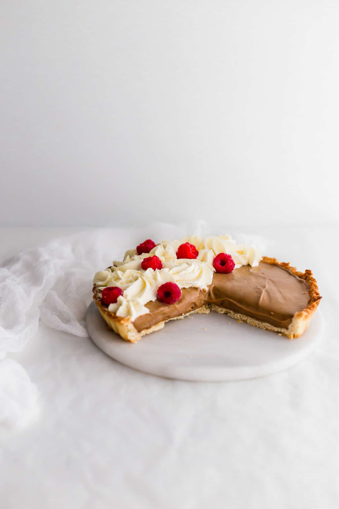

Regular Tart Flavors
Our signature mini‑tarts, baked fresh daily.
-

Classic Egg Tart
A lightly sweet, silky egg custard with a clean, delicate flavor, set inside a crisp, buttery shell.
-

Hong Kong Tart
A richer, creamier custard with a warm, caramel‑like depth, finished with the signature glossy golden top of Hong Kong–style bakeries.
-

Black Sesame Tart
Deep, nutty roasted black sesame flavor in a smooth custard, offering a bold, earthy sweetness unique to this classic ingredient.
-

NY Cheesecake Tart
A smooth, lightly sweet cream‑cheese filling with warm vanilla notes, baked over a crisp vanilla‑wafer base and finished with a bright cherry topping for a classic New York–style flavor.
-

Salted Chocolate Tart
Intense dark chocolate flavor with a smooth ganache texture, lifted by a touch of sea salt that sharpens the cocoa notes.
-

Caramel Apple Tart
Warm cinnamon‑spiced apples layered with buttery caramel, creating a sweet, cozy flavor reminiscent of a classic apple pie.
Seasonal Flavors
Limited‑edition tarts inspired by the seasons.
-

Lemon Tart
Bright, zesty lemon flavor with a refreshing tartness, set in a crisp shell for a clean citrus finish.
Available: Spring (March – May)
-

Peach Tart
A creamy peach‑infused filling with a light tang from sour cream, set in a soft, buttery crust and topped with fresh peach slices brushed in apricot glaze for a bright, juicy finish.
Available: Summer (June – August)
-

Maple Pecan Tart
Toasted pecans with a warm, maple‑rich sweetness that delivers a comforting, autumn‑inspired flavor.
Available: Fall (September – November)
-

Earl Grey Tart
Silky Earl Grey–steeped cream with notes of vanilla and bergamot, set in a crisp butter shell and topped with airy bergamot whipped cream.
Available: Winter (December – February)